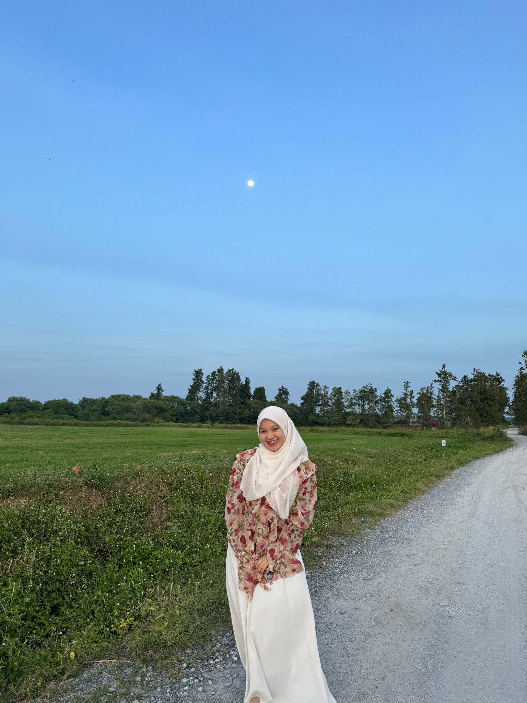
A little something for you
Happy Birthday,
Sayang.
26 looks beautiful on you.
02 · 10 · 2026
Some moments are
worth keeping.
Out of all the ordinary days we've had, somehow, these little moments became the ones I want to remember.
Our little memories
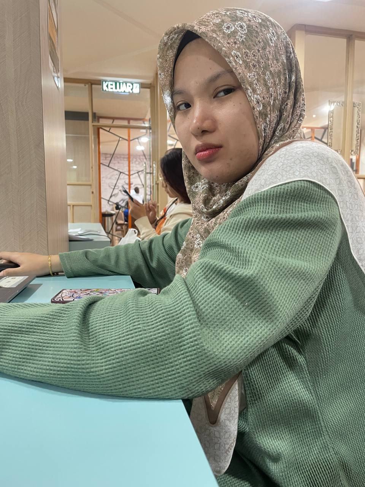
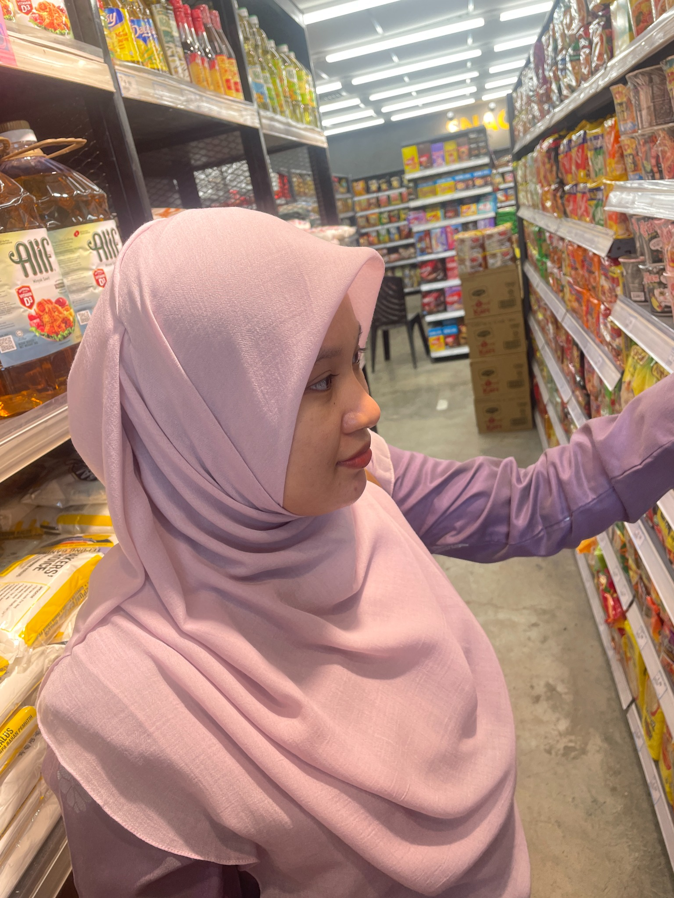
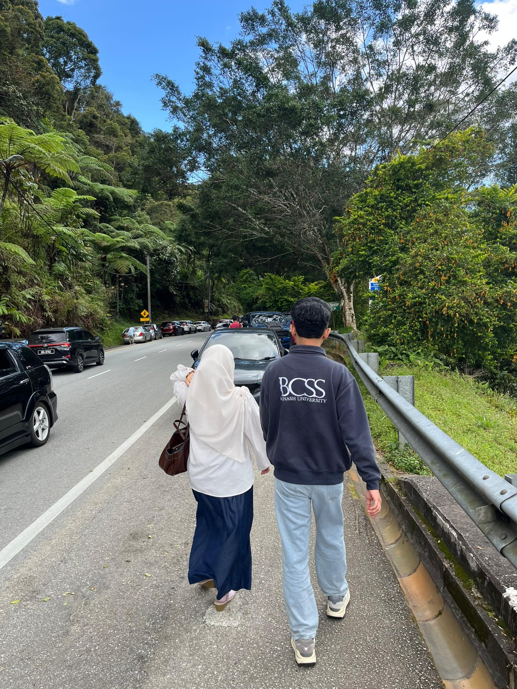
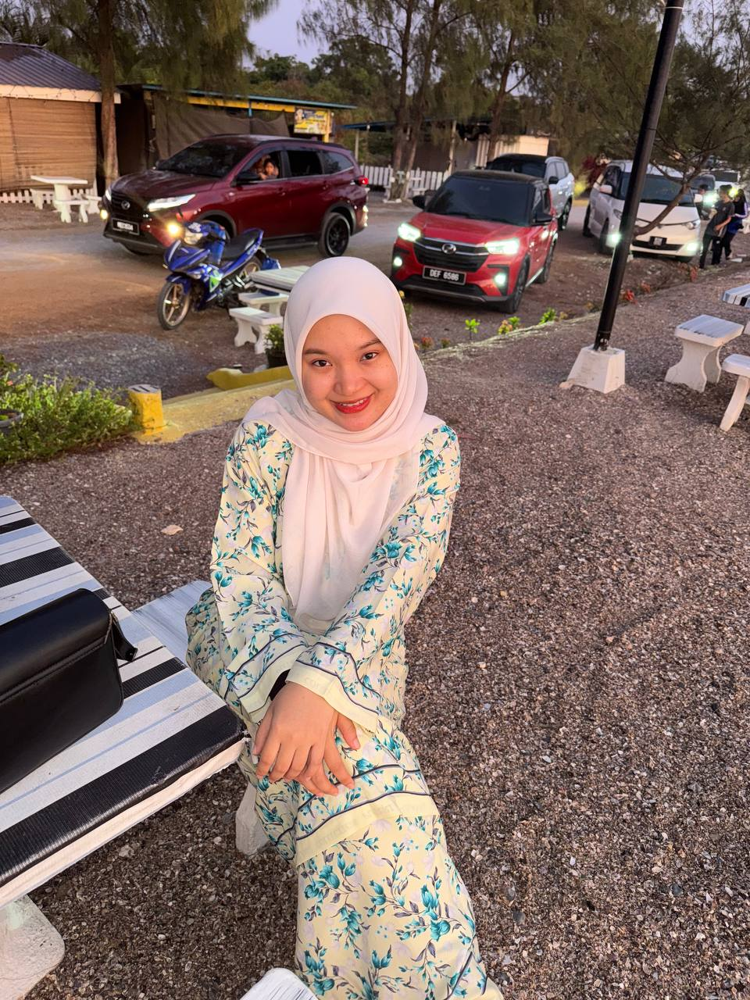
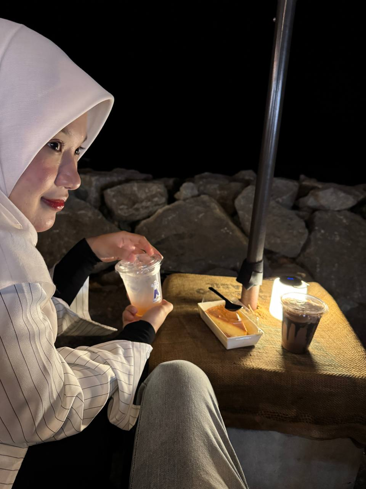
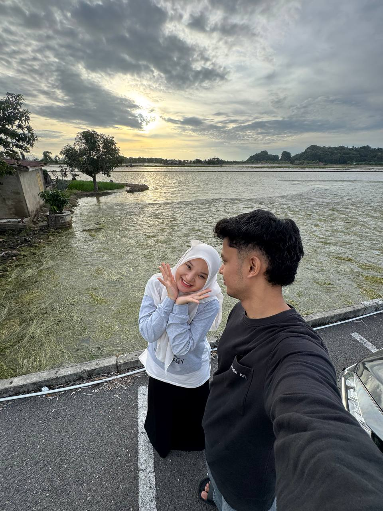
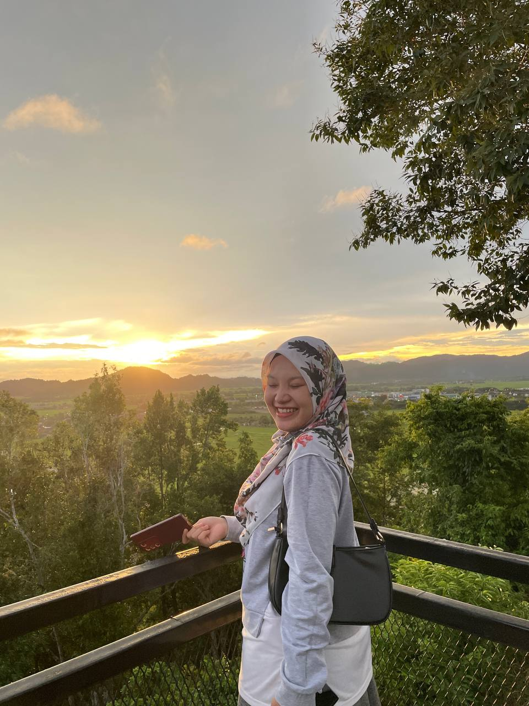
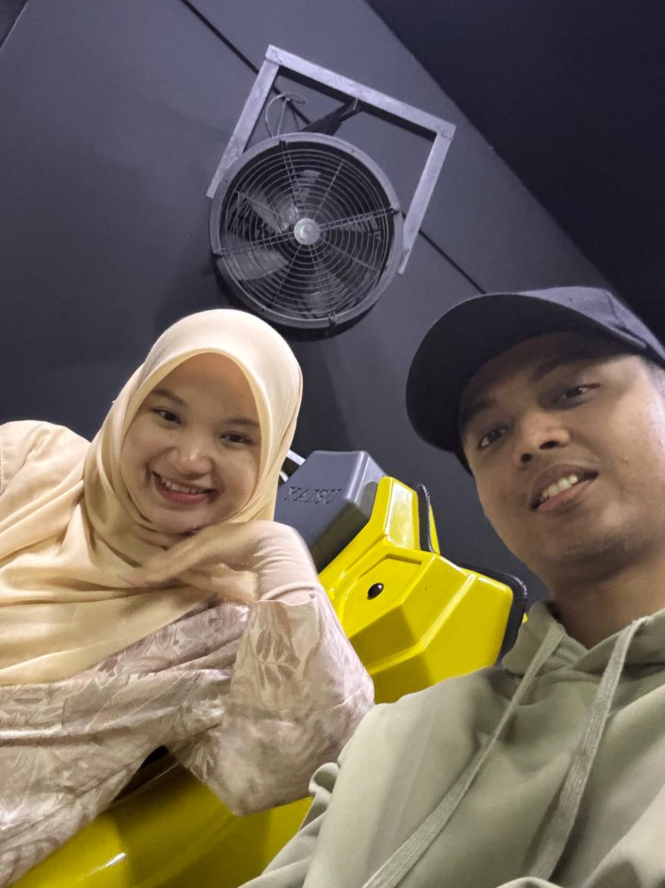
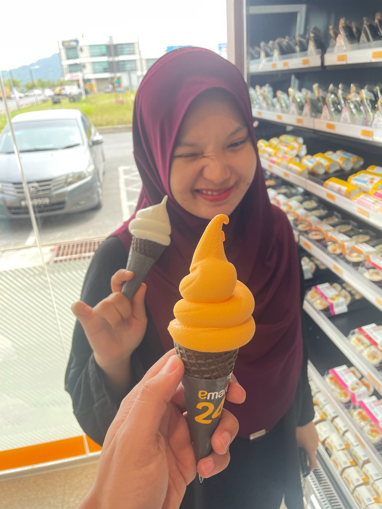
02
For you, Sayang.
Happy 26th birthday, sayang.
I don't think I need a special occasion to tell you how much you mean to me, but today gives me another reason to say it properly.
Thank you for being part of my days — for the laughs, the quiet moments, the random conversations, and even the little things that probably seemed ordinary at the time. Somehow, those ordinary things became some of my favourite memories.
I hope 26 brings you more peace, more reasons to smile, and more moments that make you genuinely happy. I hope you keep becoming the person you want to be, at your own pace, without ever feeling like you have to rush.
And if life gets difficult sometimes, I hope you remember that you don't have to face every difficult day alone.
Happy birthday, my Sayang.
Here's to more memories, more laughter,
and more ordinary days that somehow become special.
03
A new chapter
begins today.
Counting down to your birthday...
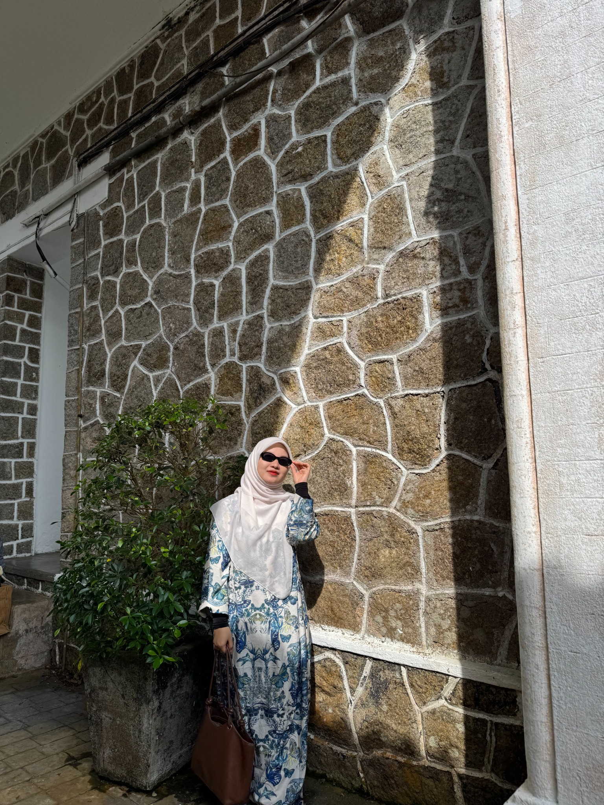
One last thing
I'm glad
it's you.
Of all the places we could have been, all the people we could have met, and all the days that could have passed us by — I'm grateful some of them brought me to you.
Happy Birthday, Sayang · 26